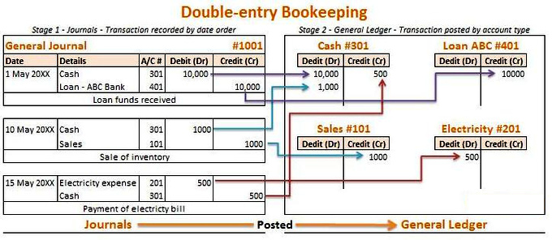
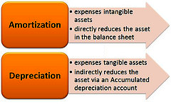
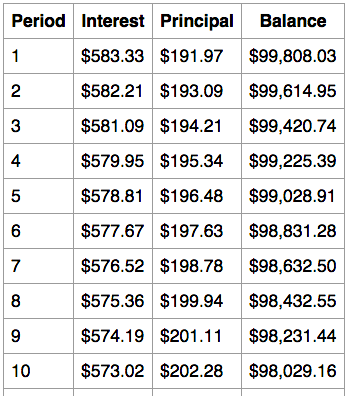
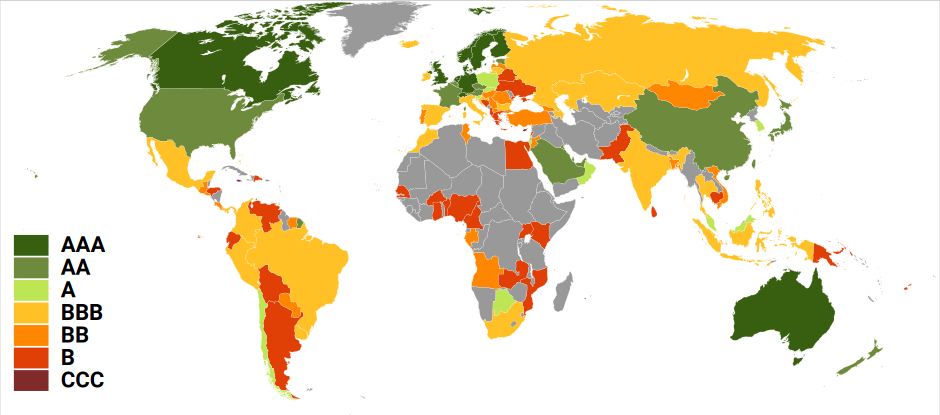
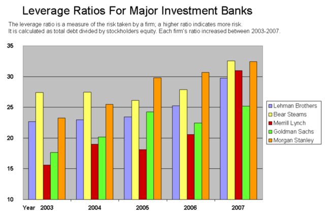
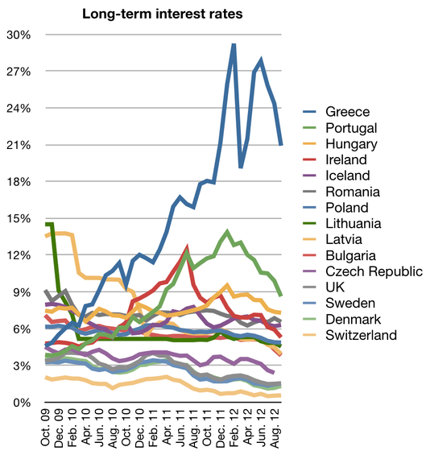

In finance, bonds are a form of debt: the creditor is the bond holder, the debtor is the bond issuer, and the interest is the coupon.
Summarize the characteristics of a bond
Bonds are debt instruments issued by bond issuers to bond holders. A bond is a debt security under which the bond issuer owes the bond holder a debt including interest or coupon payments and or a future repayment of the principal on the maturity date. Variations exist in bond types, payment terms, and features.
Interest on bonds, or coupon payments, are normally payable in fixed intervals, such as semiannually, annually, or monthly. Ownership of bonds are often negotiable and transferable to secondary markets. Bonds provide the borrower with external funds to finance long-term investments, or, in the case of government bonds, to finance current expenditure .
Bonds and stocks are both securities, but the major difference between the two is that stockholders have an equity stake in the company, whereas bondholders have a creditor stake in the company. Another difference is that bonds usually have a defined term, or maturity, after which the bond is redeemed, whereas stocks may be outstanding indefinitely. An exception is an irredeemable bond, such as a perpetuity.
Nominal, principal, par, or face amount—the amount on which the issuer pays interest, and which, most commonly, has to be repaid at the end of the term.
The issuer has to repay the nominal amount on the maturity date. As long as all due payments have been made, the issuer has no further obligations to the bond holders after the maturity date. The length of time until the maturity date is often referred to as the term or maturity of a bond. In the market for United States Treasury securities, there are three categories of bond maturities:
The coupon is the interest rate that the issuer pays to the bond holders. Usually this rate is fixed throughout the life of the bond. It can also vary with a money market index, such as LIBOR, or it can be even more exotic.
The yield is the rate of return received from investing in the bond. It usually refers either to the current yield, or running yield, which is simply the annual interest payment divided by the current market price of the bond. It can also refer to the yield to maturity or redemption yield, which is a more useful measure of the return of the bond, taking into account the current market price, and the amount and timing of all remaining coupon payments and of the repayment due on maturity. It is equivalent to the internal rate of return of a bond.
The "quality" of the issue refers to the probability that the bondholders will receive the amounts promised on the due dates. This will depend on a wide range of factors. High-yield bonds are bonds that are rated below investment grade by the credit rating agencies. As these bonds are more risky than investment-grade bonds, investors expect to earn a higher yield. Therefore, because of the inherent riskiness of these bonds, they are also called high-yield or "junk" bonds.
The market price of a tradeable bond will be influenced among other things by the amounts, currency, the timing of the interest payments and capital repayment due, the quality of the bond, and the available redemption yield of other comparable bonds which can be traded in the markets.
The issue price at which investors buy the bonds when they are first issued will typically be approximately equal to the nominal amount. The net proceeds that the issuer receives are thus the issue price less issuance fees.
Occasionally a bond may contain an embedded option:
Callability — Some bonds give the issuer the right to repay the bond before the maturity date on the call dates. Most callable bonds allow the issuer to repay the bond at par. With some bonds, the issuer has to pay a premium. This is mainly the case for high-yield bonds. These have very strict covenants, restricting the issuer in its operations. To be free from these covenants, the issuer can repay the bonds early, but only at a high cost.
Putability — Some bonds give the holder the right to force the issuer to repay the bond before the maturity date on the put dates. These are referred to as retractable or putable bonds.
In finance, there are many different types of bonds that vary in term agreements, duration, structure, source, and other characteristics.
Differentiate be the various types of bonds including secured and unsecured, registered and unregistered and convertible
In finance, there are many types of bonds. This section provides a overview of the most common types that exist in the financial world today.
This is a bond for which a company has pledged specific property to ensure its payment.
The most common secured bonds. It is a legal claim (lien) on specific property that gives the bondholder the right to possess the pledged property if the company fails to make required payments.
A debenture bond, or simply a debenture. This is an unsecured bond backed only by the general creditworthiness of the issuer, not by a lien on any specific property. More easily issued by a company that is financially sound.
This bears the owner's name on the bond certificate and in the register of bond owners kept by the bond issuer or its agent, the registrar. Bonds may be registered as to principal (or face value of the bond) or as to both principal and interest. Most bonds in our economy are registered as to principal only. For a bond registered as to both principal and interest, the issuer pays the bond interest by check. To transfer ownership of registered bonds, the owner endorses the bond and registers it in the new owner's name.Therefore, owners can easily replace lost or stolen registered bonds.
This is the property of its holder or bearer and the owner's name does not appear on the bond certificate or in a separate record. Physical delivery of the bond transfers ownership.
These are not registered as to interest. Coupon bonds carry detachable coupons for the interest they pay. At the end of each interest period, the owner clips the coupon for the period and presents it to a stated party, usually a bank, for collection.
A term bond matures on the same date as all other bonds in a given bond issue. Serial bonds in a given bond issue have maturities spread over several dates. For instance, one-fourth of the bonds may mature on 2011 December 31, another one-fourth on 2012 December 31, and so on.
These contain a provision that gives the issuer the right to call (buy back) the bond before its maturity date, similar to the call provision of some preferred stocks. A company is likely to exercise this call right when its outstanding bonds bear interest at a much higher rate than the company would have to pay if it issued new but similar bonds. The exercise of the call provision normally requires the company to pay the bondholder a call premium of about USD 30 to USD 70 per USD 1,000 bond. A call premium is the price paid in excess of face value that the issuer of bonds must pay to redeem (call) bonds before their maturity date.
A convertible bond may be exchanged for shares of stock of the issuing corporation at the bondholder's option. These bonds have a stipulated conversion rate of some number of shares for each USD 1,000 bond. Although any type of bond may be convertible, issuers add this feature to make risky debenture bonds more attractive to investors.
A stock warrant allows the bondholder to purchase shares of common stock at a fixed price for a stated period. Warrants issued with long-term debt may be nondetachable or detachable. A bond with nondetachable warrants is virtually the same as a convertible bond; the holder must surrender the bond to acquire the common stock. Detachable warrants allow bondholders to keep their bonds and still purchase shares of stock through exercise of the warrants.
These are high-interest rate, high-risk bonds. Many junk bonds issued in the 1980s financed corporate restructurings. These restructurings took the form of management buyouts (called leveraged buyouts or LBOs), and hostile or friendly takeovers of companies by outside parties. By early 1990s, junk bonds lost favor as many issuers defaulted on their interest payments. Some issuers declared bankruptcy or sought relief from the bondholders by negotiating new debt terms.
These have a coupon that remains constant throughout the life of the bond. A variation is stepped-coupon bonds, whose coupon increases during the life of the bond.
Also known as FRNs or floaters, these have a variable coupon that is linked to a reference rate of interest, such as LIBOR or Euribor.
Zeros pay no regular interest. They are issued at a substantial discount to par value, so that the interest is effectively rolled up to maturity (and usually taxed as such). The bondholder receives the full principal amount on the redemption date.
These allow for exchange to shares of a corporation other than the issuer.
These are issued by a country to fund a war.
These are bonds issued by a state, U.S. Territory, city, local government, or their agencies. Interest income received by holders of municipal bonds is often exempt from the federal tax and the issuing state's income tax. Some municipal bonds issued for certain purposes may not be tax exempt.
Also called a government bond, this is issued by the Federal government and is not exposed to default risk. It is characterized as the safest bond, with the lowest interest rate. Backed by the "full faith and credit" of the federal government, this type of bond is often referred to as risk-free.
On issuance, the journal entry to record the bond is a debit to cash and a credit to bonds payable.
Explain how a company would record a bond issue and how to determine the selling price of a bond
Bonds are essentially a form of financing for a company, but instead of borrowing form a bank the company is borrowing from investors. In exchange, the company agrees to pay the bondholders interest at predetermined intervals, for a set amount of time.
Bonds differ from notes payable because a note payable represents an amount payable to only one lender, while multiple bonds are issued to different lenders at the same time. Also, the bondholders may sell their bonds to other investors any time prior to the bonds maturity.
The market price of a bond is expressed as a percentage of nominal value. For example, a bond issued at par is selling for 100% of its face value. Bonds can sell for less than their face value, for example a bond price of 75 means that the bond is selling for 75% of its par (face value).
The amount of risk associated with the company issuing the bond determines the price of the bond. The more risk assessed to a company the higher the interest rate the issuer must pay to buyers. If a bond has a coupon interest rate that is higher than the market interest rate it is considered a premium.
The premium (higher interest rate) is to offset the assumed higher than average risk associated with investing in the company.
Bonds are considered issued at a discount when the coupon interest rate is below the market interest rate.That means a company selling bonds at a discount rate receive less than the face value of the bond in the sale.
When bonds are issued, they are classified as long-term liabilities. On issuance, the journal entry to record the bond is a debit to cash and a credit to bonds payable.
Other journal entries associated with bonds is the accounting for interest each period that interest is payable. The journal entry to record that is a debit interest expense and a credit to cash.
Journal entries are required to record initial value and subsequent interest expense as the issuer pays coupon payments to the bondholder.
Summarize how a company would record the original issue of the bond and the subsequent interest payments
Bonds derive their value primarily from two promises made by the borrower to the lender or bondholder. The borrower promises to pay (1) the face value or principal amount of the bond on a specific maturity date in the future, and (2) periodic interest at a specified rate on face value at stated dates, usually semiannually, until the maturity date .
Example of bonds issued at face value on an interest date:-
Valley Company's accounting year ends on December 31. On 2010 December 31, Valley issued 10-year, 12% yield bonds with a USD 100,000 face value, for USD 100,000. The bonds are dated 2010 December 31, call for semiannual interest payments on June 30 and December 31, and mature on 2020 December 31. Valley made the required interest and principal payments when due. The entries for the 10 years are as follows:
On 2010 December 31, the date of issuance, the entry is:
2010 Dec. 31 Cash (+A) 100,000
Bonds payable (+L) 100,000
To record bonds issued at face value.
On each June 30 and December 31 for 10 years, beginning 2010 June 30 (ending 2020 June 30), the entry would be: Each year June 30 And Dec.31
Bond Interest Expense (\$100,000 x 0.12 x½) (-SE) 6,000
Cash (-A) 6,000
To record periodic interest payment. On 2020 December 31, the maturity date, the entry would be:
2020 Dec. 31
Bond interest expense (-SE) 6,000
Bonds payable (-L) 100,000
Cash (-A) 106,000
To record final interest and bond redemption payment.
Note that Valley does not need adjusting entries because the interest payment date falls on the last day of the accounting period. The income statement for each of the 10 years (2010-2018) would show Bond Interest Expense of USD 12,000 (USD 6,000 X 2); the balance sheet at the end of each of the years (2010-2018) would report bonds payable of USD 100,000 in long-term liabilities. At the end of 2019, Valley would reclassify the bonds as a current liability because they will be paid within the next year.
The real world is more complicated. For example, assume the Valley bonds were dated 2010 October 31, issued on that same date, and pay interest each April 30 and October 31. Valley must make an adjusting entry on December 31 to accrue interest for November and December. That entry would be:
2010 Dec. 31
Bond interest expense (\$100,000 x 0.12 x 2/12) (-SE) 2,000
Bond interest payable (+L) 2,000
To accrue two month's interest expense.
The 2011 April 30, entry would be: 2011 Apr. 30
Bond interest expense (\$100,000 x 0.12 x(4/12)) (-SE) 4,000
Bond interest payable (-L) 2,000
Cash (-A) 6,000
To record semiannual interest payment.
The 2011 October 31, entry would be:
2011 Oct. 31
Bond interest expense (-SE) 6,000
Cash (-A) 6,000
To record semiannual interest payment.
Each year Valley would make similar entries for the semiannual payments and the year-end accrued interest. The firm would report the USD 2,000 Bond Interest Payable as a current liability on the December 31 balance sheet for each year.
A bond's book value is affected by its term, face value, coupon rate, and discount rate.
Explain how a bond's value is affected by its term, face value, coupon and discount rate
A bond is a financial security that is created when a person transfers funds to a company or government, with the understanding that at some point in the future the entity issuing the bond will have to repay the amount, plus interest . Generally, the person who holds the actual bond document is the one with the right to receive payment. This allows people who originally acquire a bond to sell it on the open market for an immediate payout, as opposed to waiting for the issuing entity to pay the debt back. Note that the trading value of a bond (its market price) can vary from its face value depending on differences between the coupon and market interest rates.
A bond's term, or maturity, is how long the issuing company has until it must repay the entirety of what it owes. Sometimes a business will make interest payments during the term of the bond, but a term ends when all of the payments associated with the bond are completed.
Otherwise known as the principal or nominal amount, this is the amount of money that the organization issuing the bond has to pay interest on and generally has to repay when the bond is redeemed at the end of the term. The redemption amount generally equals how much the original investor paid to acquire the bond. However, the redemption amount can be different than the acquisition cost.
A bond's coupon is the interest rate that the business must pay on the bond's face value. These interest payments are generally paid periodically during the bond's term, although some bonds pay all the interest it owes at the end of the period. While the coupon rate is generally a fixed amount, it can also be "indexed. " This means that the interest rate is calculated by taking an established rate that fluctuates over time, such as a bank's lending rate, and adding a "premium" percentage amount to determine the bond's coupon rate. As a result, the interest that is paid to the bond holder fluctuates over time with an indexed coupon rate.
A bond's value is measured based on the present value of the future interest payments the bond holder will receive. To calculate the present value, each payment is adjusted using the discount rate. The discount rate is a measure of what the bondholder's return would be if he invested his money in another security. In practical terms, the discount rate generally equals the coupon rate or interest rate associated with similar investment securities.
A bond's value is measured by its sale price, but a business can estimate a bond's price before issuance by calculating its present value.
Summarize how a company would calculate the value of their bonds
A business must record a liability in its records when it issues a series of bonds. The value of the liability the business will record must equal the amount of money or goods it receives when it issues the bond. Whether the amount the business will receive equals its face value depends on the difference between the bond's contract rate and the market rate of interest at the time the bond is issued .
The bond's contract rate is another term for the bond's coupon rate. It is what the issuing company uses to calculate what it must pay in interest on the bond. The market rate is what other bonds that have a similar risk pay in interest.
Regardless of what the contract and market rates are, the business must always report a bond payable liability equal to the face value of the bonds issued. If the market rate is greater than the coupon rate, the bonds will probably be sold for an amount less than the bonds' face value and the business will have to report a "bond discount. " The value of the bond discount will be the difference between what the bonds' face value and what the business received when it sold the bonds. If the market rate is less than the coupon rate, the bonds will probably be sold for an amount greater than the bonds' value. The business will then need to record a "bond premium" for the difference between the amount of cash the business received and the bonds' face value.
If the market and coupon rates differ, the issuing company must calculate the present value of the bond to determine what price to charge when it sells the security on the open market. The present value of a bond is composed of two components; the principal and the interest payments. The discount rate for both the principal and interest payment components is the market rate when the bond was issued.
To record a bond issued at par value, credit the "bond payable" liability account for the total face value of the bonds and debit cash for the same amount.
Explain how a company would record a bond issued a par value
Bonds issued at par value are relatively simple to calculate and record. When a bond is issued at par value it is sold for the face value amount. This generally means that the bond's market and contract rates are equal to each other, meaning that there is no bond premium or discount.
All transactions made by the company in relation to the bond must be recorded in its general ledger. The general ledger contains all entries from both the General Journal and the Special Journals.
When a business issues a bond, it participates in three types of transactions. First, the business issues the bond in exchange for cash. Next, it generally pays interest during the term of the bond. Finally, it pays off the obligation by repaying the face amount and the last interest payment. Each of these transactions must be recorded in the company's financial records with a series of journal entries.
When the bond is issued, the company must record a liability called "bond payable. " This is generally a long-term liability. It is created by recording a credit equal to the face value of all the bonds that are issued. To balance this entry, the company must also debit cash equal to the face value of all the bonds issued. Since the bonds are sold at par value, the amount of cash the company receives should equal the total face value of the issued bonds.
Cash - debit face value (increase cash balance)
Bond payable - credit face value (increase bonds payable)
When the company makes an interest payment, it must credit, or decrease, its cash balance by the amount it paid in interest. To balance the entry, the company must record a debit equal to the amount it paid in its bond interest expense account.
Bond Interest Expense - debit interest payment (increase interest expense line)
Cash - credit interest payment (decrease cash balance)
When the bond is paid off, the company must record two transactions. First, it must record any final interest payments that are made. Then, it must record the bond principal being paid off. This is done by debiting the bond payable account and crediting the cash account for the full book value of the bond.
Bond Interest Expense - debit interest payment
Cash - credit final interest payment
Bond Payable - debit face value
Cash - credit face value
When a business sells a bond at a discount, it must record a discount balance in its records and amortize that amount over the bond's term.
Explain how to record a bond issued at a discount
For the issuer, recording a bond issued at a discount can be a little more difficult than recording a bond issued at par value. Because the issuer receives less cash for the bond than the face value, this difference must be recorded in the company records as a discount expense. When a bond is sold at a discount, the market rate of the bond exceeds the contract rate. As a result, the bond must be sold at an amount less than its face value. In addition, that discounted amount must be amortized over the term of the bond. When the company amortizes the discount associated with the bond, it increases its interest expense beyond what it actually pays to the bondholder.
A bond's discount amount must be amortized over the term of the bond.
When a bond is sold, the company records a liability by crediting the "bonds payable" account for the bond's total face value. Next, the company debits the cash account by the amount of money it receives from the bond sale. The business then debits the difference between the bond's face value and what it receives in cash from the sale. That is the discount amount.
Assume a business sells a 10 year, \$100,000 bond for \$90,000. The journal entry for that transaction would be as follows:
Cash \$90,000 Dr.
Discount on Bond Payable \$10,000 Dr.
Bond Payable \$100,000 Cr.
As the company pays interest, the discount on the bond payable is amortized. Generally, the amortization rate is calculated by dividing the discount by the number of periods the company has to pay interest.
Using the example from above, assume the company pays 6% interest on the \$100,000 bond annually. That means that the amortization rate on the bond payable equal \$1,000 (\$100,000/10 years). While the business would only have to pay the bondholder \$6,000 in cash, its total interest expense equals \$7,000, or the amount of interest it pays plus the amortization rate. The journal entry would be:
Bond Interest Expense \$7,000 Dr.
Discount on Bond Payable \$1,000 Cr.
Cash \$6,000 Cr.
When the bond matures, the business must record the repayment of the principal to the bondholder, as well as all final interest payments. At this time, the discount on bond payable and bond payable accounts must be zeroed out, and all cash payments must be recorded.
Using our example from above, the final set of bond journal entries should look like this:
Bond Interest Expense \$7,000 Dr.
Discount on Cash Payable \$1,000 Cr.
Cash \$6,000 Cr.
Bond Payable \$100,000 Dr.
Cash \$100,000 Cr.
When a bond is sold at a premium, the difference between the sales price and face value of the bond must be amortized over the bond's term.
Explain how to record bonds issued at a premium
When a bond is issued at a premium, that means that the bond is sold for an amount greater than the bond's face value. This generally means that the bond's contract rate is greater than the market rate. Like with a bond that is sold at a discount, the difference between the bond's face value and sales price must be amortized over the term of the bond. However, unlike with a bond sold at a discount, the process of amortizing the premium will decrease the bond's interest expense recorded on the issuing company's financial records. The issuing company will still be required to pay the bondholder the interest payments guaranteed by the bond.
An example of an amortization schedule of a \$100,000 loan over the first two years.
When the bond is issued, the company must debit the cash account by the amount that the business receives for the bond sale. A liability, titled "bond payable," must be created and credited by an amount equal to the face value of the issued bonds. The difference between the cash from the bond sale and the face value of the bond must be credited to a bond premium account.
For example, assume a business issues a 10-year bond that pays 6% interest annually, with a face value of \$100,000. This bond sells for \$110,000. The resulting journal entry would be:
Cash - \$110,000
Bond Payable - \$100,000
Bond Premium - \$100,000
When the business pays interest, it must also amortize the bond premium at that time. To calculate the amortization rate of the bond premium, a company generally divides the bond premium amount by the number of interest payments that will be made during the term of the bond. Every time interest is paid, the company must credit cash for the interest amount paid to the bond holder. The company must debit the bond premium account by the amortization rate. The difference between the amount paid in interest and the premium's amortization for the period is the interest expense for that period.
Using the example from above, the \$10,000 premium would be divided by 10 annual interest payments. This would make the amortization rate of the bond's premium equal to \$1,000 per year. The company must pay \$6,000 in interest annually, so the company's annual interest expense equals \$5,000. The resulting journal entry is:
Bond Interest Expense - \$5,000
Bond Premium - \$1,000
Cash - \$6,000
When the bond reaches maturity, the company must pay the bondholder the face value of the bond, finish amortizing the premium, and pay any remaining interest obligations. When all the final journal entries are made, the bond premium and bond payable account must equal zero.
Using the example, this is what the final journal entries must look like:
Bond Interest Expense - \$5,000
Bond Premium - \$1,000
Cash - \$6,000
Bond Payable - \$100,000
Cash - \$100,000
The value of a zero-coupon bond equals the present value of its face value discounted by the bond's contract rate.
Explain how to value a zero coupon bond
A zero-coupon bond is one that does not pay interest over the term of the bond. Instead, the entity will sell the bond at lower than face value. When the bond's term is over, the issuing business will repay the bond at its face value. The bondholder generates a return paying less than what he receives in payment at the end of the bond's term.
While the business may not make periodic interest payments, interest income is still generated. The interest income is merely accumulated and paid at the end of the bond's term.
Generally, the price of a zero-coupon bond is based on the present value of the amount the issuing business will pay the bondholder when the bond matures. The amount the company pays at the end of the term equals the bond's face value. The present value is determined using the interest rate stated on the bond. The bond's term is used as the time period in the present value calculation.
It is important when completing the zero-coupon bond calculation to ensure the time period and term of the bond are expressed in similar terms. If the interest rate of the bond is expressed as a monthly rate and the term of the bond is 10 years, the bond term should be expressed as 120 months when making the calculation.
Assume a business issues a 2 year note, paying 5% interest with a face value of \$100,000. To calculate its present value, you would raise 1.05 to the tenth power. This equals 1.1025. You then divide \$100,000 by 1.1025. The result is that the bond would have a present value of \$90,702.95.
The journal entry to record the retirement of a bond: Debit Bonds Payable & Credit Cash.
Explain how to record the retirement of a bond at maturity
A maturity date is the date when the bond issuer must pay off the bond. Maturity is generally an indication of when you as an investor will get your money back. Typically, bonds stop earning interest after they mature. As long as all due payments have been made, the issuer has no further obligations to the bondholders after the maturity date.
The carrying value of bonds at maturity will always equal their par value. In other words, par value (nominal, principal, par or face amount), the amount on which the issuer pays interest, and which, most commonly, has to be repaid at the end of the term. For a bond sold at discount, its carrying value will increase and equal their par value at maturity. For a bond sold at premium, its carrying value will decrease and equal the par value at maturity.
Some structured bonds can have a redemption amount that is different from the face amount and can be linked to performance of particular assets such as a stock or commodity index, foreign exchange rate or a fund. This can result in an investor receiving less or more than his original investment at maturity.
Bonds can be classified to coupon bonds and zero coupon bonds. For coupon bonds, the bond issuer is supposed to pay both the par value of the bond and the last coupon payment at maturity. In case of a zero coupon bond, only the amount of par value is paid when the bond is redeemed at maturity.
Unless the bond matures in a year or less it is shown on the balance sheet in the long-term liabilities section. If current assets will be used to retire the bonds, a Bonds Payable account should be listed in the current liability section. If the bonds are to be retired and new ones issued, they should remain as a long-term liability. All bond discounts and premiums also appear on the balance sheet.
A separate account should be maintained for each bond issue. On the balance sheet, the Bonds Payable account can be shown as different issues or consolidated into a single balance. If a single balance is shown, then a schedule or note should disclose the details of the bond issues.
A description of bonds issued including the effective interest rate, maturity date, terms, and sinking fund requirements are included in the notes to financial statements.
The journal entry to record the retirement of a bond:
Debit Bonds payable
Credit Cash
Keep in mind the carrying value - cash paid to retire bonds = gain or loss on bond retirement
Early redemption happens on issuers or holders' intentions, more likely as interest rates are falling and bonds contain embedded options.
Summarize what it means to redeem a bond before maturity
Bonds can be redeemed at or before maturity. Early redemption may happen on bond issuers or bondholders' intentions .
For bond issuers, they can repurchase a bond at or before maturity. Redemption is made at the face value of the bond unless it occurs before maturity, in which case the bond is bought back at a premium to compensate for lost interest. The issuer has the right to redeem the bond at any time, although the earlier the redemption takes place, the higher the premium usually is. This provides an incentive for companies to do this as rarely as possible. It is notable that early repurchase happens more often when the interest rate in the market is on decline and when the bond contains an embedded option. It grants option-like features to the holder or the issuer. To be detailed, the bond issuer will repurchase bonds with callability.
Some bonds give the issuer the right to repay the bond before the maturity date on the call dates. These bonds are referred to as callable bonds. Most callable bonds allow the issuer to repay the bond at par. With some bonds, the issuer has to pay a premium, the so-called call premium. This is mainly the case for high-yield bonds. These have very strict covenants. They restrict the issuer in its operations. To be free from these covenants, the issuer can repay the bonds early, but only at a high cost.
Bonds with embedded options can also be ones with putability. Some bonds give the holder the right to force the issuer to repay the bond before the maturity date on the put dates. These are referred to as retractable or putable bonds. In this case, the price at which bonds are redeemed is predetermined in bond covenants.
Debts that become due more than one year into the future are reported as long-term liabilities on the balance sheet.
Identify a long-term liability
Long-term liabilities are debts that become due, or mature, at a date that is more than a year into the future. An example of this is a student loan. Let's say John, a freshman in college, obtains a student loan for 25,000 and the bank does not require loan payments until 6 months after he graduates, i.e. 4.5 years after the loan was originated. This is an example of a long-term liability.
"Notes Payable" and "Bonds Payable" are also examples of long-term liabilities, and they often introduce an interesting distinction between current liabilities and long-term liabilities presented on a classified balance sheet.
Let's say Company X obtains a 100,000 Note Payable that requires 5 annual payments of 20,000 starting 1/1/14. On Company X's 12/31/12 balance sheet, a long-term liability for 100,000 would be reported, but what about the balance sheet as of 12/31/13? Since Company X is required to make a 20,000 payment on 1/1/14, which is less than one year away, a current liability of 20,000 and a long-term liability of 80,000 would be reported on its balance sheet as of 12/31/13.
Continuing one year forward, Company X would report a current liability of 20,000 and a long-term liability of 60,000 on its balance sheet as of 12/31/2014.
What this example presents is the distinction between current liabilities and long-term liabilities. Despite a Note Payable, Bonds Payable, etc., starting out as a long-term liability, the portion of that debt that is due within a year has to be backed out of the long-term liability and reported as a current liability.
See below for the balance sheet reporting treatment of the current and long-term liability portions of the Note Payable from initiation to final payment.
12/31/12 ......Current Liability: 0 ...............Long-Term Liability: 100,000
12/31/13 ......Current Liability: 20,000 ......Long-Term Liability: 80,000
12/31/14 ......Current Liability: 20,000 ......Long-Term Liability: 60,000
12/31/15 ......Current Liability: 20,000 ......Long-Term Liability: 40,000
12/31/16 ......Current Liability: 20,000 ......Long-Term Liability: 20,000
12/31/17 ......Current Liability: 20,000 ......Long-Term Liability: 0
12/31/18 ......Current Liability: 0 ...............Long-Term Liability: 0
Analyzing long-term liabilities combines debt ratio analysis, credit analysis and market analysis to assess a company's financial strength.
Summarize how to analyze a company's long-term debt
Long-term liabilities are obligations that are due at least one year into the future, and include debt instruments such as bonds and mortgages. Analyzing long-term liabilities is done for assessing the likelihood the long-term liability's terms will be met by the borrower. After analyzing long-term liabilities, an analyst should have a reasonable basis for a determining a company's financial strength. Analyzing long-term liabilities is necessary to avoid buying the bonds of, or lending to, a company that may potentially become insolvent.
Analyzing long-term liabilities often includes an assessment of how creditworthy a borrower is, i.e. their ability and willingness to pay their debt. Standard & Poor's is a credit rating agency that issues credit ratings for the debt of public and private companies. As part of their analysis Standard & Poor's will issue a credit rating that is designed to give lenders and investors an idea of the creditworthiness of the borrower. The best rating is AAA with the worst being D. Please consult the figure as an example of Standard & Poor's credit ratings issued for debt issued by governments all over the world.
An example of the credit ratings prescribed by Standard & Poor's as a result of their respective long-term liability analysis for debt issued at the national government level. Countries issue debt to build national infrastructure. Look how expensive it is to raise capital for such projects based on geographic region.
In addition to credit rating agencies such as Standard & Poor's, analysts can use debt ratios to help benchmark a company to it's industry peers. Comparing a company to its peers will give an analyst perspective about what is considered normal or abnormal for a respective industry. Popular debt ratios include: debt ratio, debt to equity, long-term debt to equity, times interest earned ratio (interest coverage ratio), and debt service coverage ratio. Data used to calculate these ratios are provided on a company's balance sheet, income statement, and statement of changes in equity. Typically, company's present liabilities with the earliest due dates first.
There is more to analyzing long-term liabilities than simply reading a company's credit rating and performing independent debt ratio analysis. In addition, an analyst needs to consider the overall economy, industry trends and management's experience when forming a conclusion about the strength or weakness of a company's financial position. When gathering information, an analyst should always read the footnotes contained in financial statements to determine if there are any disclosures related to long-term liabilities or other factors that may impact the company's ability to pay it's long-term obligations.
The Debt-to-Equity Ratio is a financial ratio that compares the debt of a company to its equity and is closely related to leveraging.
Summarize how to calculate a company's debt to equity ratio
The Debt-to-Equity Ratio is a financial ratio indicating the relative proportion of shareholder's equity and debt used to finance a company's assets, and is calculated as total debt / total equity.
In order to obtain assets used in operations, a company will raise capital through either issuing shareholder's equity (e.g., publicly traded common stock) or debt (e.g., notes payable). Stakeholders, which include investors and lending institutions, provide companies with capital with an expectation that those companies generate net income through their respective operations.
Debt is typically a long-term liability that represents a company's obligation to pay both principal and interest to purchasers of that debt.
Equity represents ownership of a company, and does not include any agreed upon repayment terms.
Each form of raising capital has its own set of pros and cons. Interest payments on debt are tax deductible, while dividends on equity are not. Returns to purchasers of debt are limited to agreed- upon terms (i.e., interest rates), however, they have greater legal protection in the event of a bankruptcy. The returns an equity holder can achieve have unlimited upside, however, they are typically the last to be paid in the event of a bankruptcy.
Calculating a company's debt to equity ratio is straight forward, and the debt and equity components can be found on a company's respective balance sheet. For more advanced analysis, financial analysts can calculate a company's debt to equity ratio using market values if both the debt and equity are publicly traded.
When used to calculate a company's financial leverage , the debt-to-equity ratio includes only long-term liabilities in the numerator and can even go a step further to exclude the current portion of the long-term liabilities. This means that other short-term liabilities, such as accounts payable, are excluded when calculating the debt-to-equity ratio.
Graph of how infamous investment banks were leveraged prior to the credit crisis of 2008.
Times Interest Earned Ratio = (EBIT or EBITDA) / (Required Interest Payments), and is indicative of a company's financial strength.
Explain how a company uses the times interest earned ratio
The Times Interest Earned Ratio indicates the ability of a company to meet its required interest payments , and is calculated as:
The Times Interest Earned Ratio is an indication of a company's overall financial health.
Times Interest Earned Ratio = Earnings before Interest and Taxes ( EBIT ) / Interest Expense .
Earnings before Interest and Taxes (EBIT) can be calculated by taking net income, as reported on a company's income statement, and adding back interest and taxes.
Analysts often use "Operating Income" as a proxy for EBIT when complex accounting situations, such as discontinued operations, changes in accounting principle, extraordinary items, etc., are reported in a company's financial statements. Analysts will sometimes use EBITDA instead of EBIT when calculating the Times Interest Earned Ratio. EBITDA can be calculated by adding back Depreciation and Amortization expenses to EBIT.
The Times Interest Earned Ratio is used by financial analysts to assess a company's ability to pay its required interest payments. The higher this ratio, or the more EBIT a company can produce relative to its required interest payments, the stronger the company's creditworthiness and overall financial health are considered to be.
For example, if Company X's EBIT is 500,000 and its required interest payments are 300,000, its Times Interest Earned Ratio would be 1.67. If Company A's EBIT is 750,000 and its required interest payments are 150,000, itsTimes Interest Earned Ratio would be 5. Comparing the respective Times Interest Earned Ratios would lead an analyst to believe that Company A is in a much better financial position because its EBIT covers its required interest payments 5 times, relative to Company X, whose EBIT only covers its required interest payments 1.67 times.
If a company's Times Interest Earned Ratio falls below 1, the company will have to fund its required interest payments with cash on hand or borrow more funds to cover the payments. Typically, a Times Interest Earned Ratio below 2.5 is considered a warning sign of financial distress.
Off-Balance-Sheet-Financing represents rights to use assets or obligations that are not reported on balance sheets to pay liabilities.
Explain what constitutes an off-balance-sheet financing item
Off-Balance-Sheet-Financing is associated with debt that is not reported on a company's balance sheet. For example, financial institutions offer asset management or brokerage services, and the assets managed through those services are typically owned by the individual clients directly or by trusts. While these financial institutions may benefit from servicing these assets, they do not have any direct claim on them.
The formal accounting distinctions between on and off-balance sheet items can be complicated and are subject to some level of management judgment. However, the primary distinction between on and off-balance sheet items is whether or not the company owns, or is legally responsible for the debt. Furthermore, uncertain assets or liabilities are subject to being classified as "probable", "measurable" and "meaningful".
An example of off-balance-sheet financing is an unconsolidated subsidiary. A parent company may not be required to consolidate a subsidiary into its financial statements for reporting purposes; however the parent company may be obligated to pay the unconsolidated subsidiaries liabilities.
Another example of off-balance-sheet financing is an operating lease, which are typically entered into in order to use equipment on a short-term basis relative to the overall useful life of the asset. An operating lease does not transfer any of the rewards or risks of ownership, and as a result are not reported on the balance sheet of the lessee. A liability is not recognized on the lessee's balance sheet even though the lessee has the obligation to pay an agreed upon amount in the future.
It is important to consider these off-balance-sheet-financing arrangements because they have an immediate impact on a company's overall financial health. For example, if a company defaults on the rental payments required by an operating lease, the lessor could repossess the assets or take legal action, either of which could be detrimental to the success of the company.
{kind=link}
{kind=link}
{kind=link}
{kind=link}
{kind=link}
{kind=link}